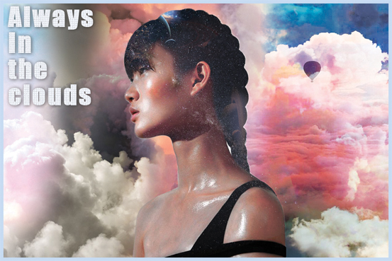

I was really inspired by fantasy and dream like images to use as part of my raster project.
I love seeing ideas and creations from the imagination that typically wouldn't exist in the real world.
Here I took an image of a girl and turned her hair into a galaxy. Then placed her in a mystical environment.